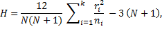
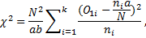

Compare Multiple Independent Samples
The command compares multiple independent samples using the Kruskal-Wallis test (Kruskal-Wallis ANOVA by Ranks) and Mood's median test.
Kruskal-Wallis test is the nonparametric alternative to one-way between groups ANOVA. The test assumes that each of the samples (treatment conditions) contains at least five observations (scores). The usage of Kruskal-Wallis test is preferable when there are three or more conditions (samples) that need to be compared and each condition is performed by a different group of participants, or the assumptions for a parametric test are not met.
The median test is a special case of the chi-square test for independence. The test has poor statistical power for samples drawn from normal or short-tailed distributions, but it is particularly effective in detecting shift in location for symmetric and heavy-tailed distributions.
How To
For unstacked data (each column is a sample):
o Run the Statistics→Nonparametric Statistics → Compare Multiple Independent Samples command.
o Select variables to compare.
For stacked data:
o Run the Statistics→Nonparametric Statistics → Compare Multiple Independent Samples (with group variable) command.
o Select a variable with observations (Variable) and a text or numeric variable with group names (Groups).
Results
The report includes Kruskal-Wallis ANOVA and median test results.
Kruskal-Wallis Test is used for comparing two or more independent samples of equal or different sample sizes. It extends the Mann–Whitney U test when there are more than two groups.
The null hypothesis is that samples come from populations with identical locations. When it is assumed that the shape of the distribution for each sample is the same, the null hypothesis can be stated as: the population medians of all samples are equal (alternative hypothesis H1: at least one population median of one sample is different from the population median of at least one other sample).
Kruskal-Wallis test statistic H is defined as:

where is the total number of observations across all samples, k is the number of samples, ni is the number of observations in the ith sample, ri is the rank of ith observation. The test statistic H is approximately chi-square distributed with k - 1 degrees of freedom.
If the p-level ≤ α (default value – 0.05) the null hypothesis is rejected and the alternative hypothesis, that the differences between some of the medians are statistically significant, is accepted (assuming the same shape of the distribution).
The median test is an extension of the paired sign test and is similar to the sign test in terms of robustness (robust against outliers) and power (generally low). The null hypothesis H0 – samples come from the same distribution; when the same distribution is assumed for populations, H0: populations have the same median.
The test statistic is a chi-squared statistic for a 2 x k contingency table (the rows contains the number of observations above and below the grand median for each sample):

where k is the number of samples, a is the number of observations greater than the grand median for all samples, b is the number of observations less than or equal to the median for all samples, N is the total number of observations across all samples, is the number of observations greater than the median for the ith sample.
The test results are interpreted in the same way as the Kruskal-Wallis test results: if the p-level is less than or equal to α (default value – 0.05) then the alternative hypothesis is accepted – at least two medians are different (assuming the same shape of the distribution).
References
Chalmer, B. (1986). Understanding Statistics Published by CRC Press. Nearfine Books (Brooklyn, NY, U.S.A.)
Corder, G.W. & Foreman, D.I. (2014). Nonparametric Statistics: A Step-by-Step Approach, Wiley.
Kruskal, W. H., & Wallis, W. A. (1952). Use of ranks in one-criterion variance analysis. Journal of the American Statistical Association, 47 № 260. — pp. 583–621
Siegel, S. (1956). Nonparametric statistics: For the behavioral sciences. New York: McGraw-Hill, 1956.